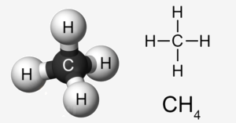

Метан
Метан - первый член гомологического ряда насыщенных углеводородов, наиболее устойчив к химическим воздействиям. Химические свойства метана ничем не отличаются от свойств, присущих всем веществам класса алканов. В школьном курсе химии метан изучают одним из первых веществ органики, так как он является одним из простейших представителей алканов. В его составе один атом углерода и четыре атома водорода.
Метан в больших количествах содержится в атмосфере. Мы не обращаем внимания на нахождение этого газа в воздухе, ведь на нашем организме это никак не отражается, а вот канарейки очень чувствительны к метану.
Когда-то они даже помогали шахтерам спускаться под землю. Когда процентное содержание метана изменялась, птицы переставали петь. Это служило сигналом для человека, что он спустился слишком глубоко и нужно подниматься наверх.
Образуется метан в результате распада остатков живых организмов. Не случайно с английского methane переводится, как болотный газ, ведь он может быть обнаружен в заболоченных водоемах и каменноугольных шахтах.